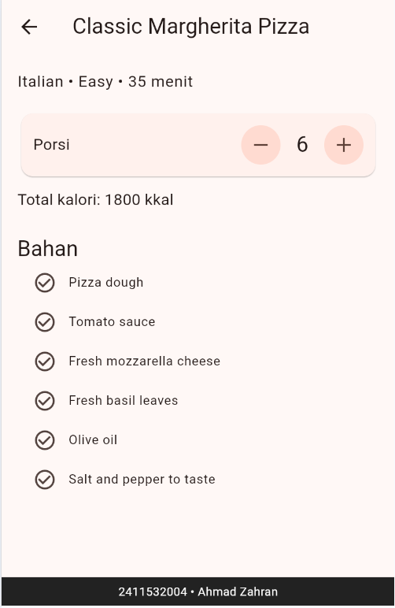
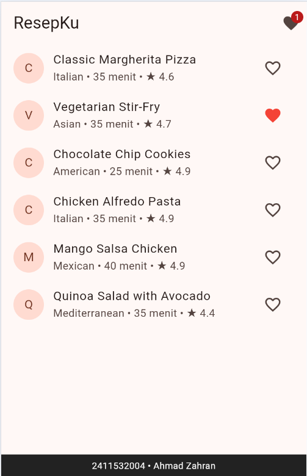
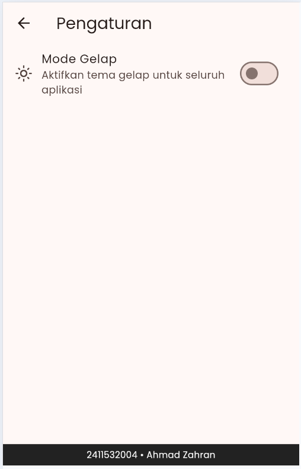
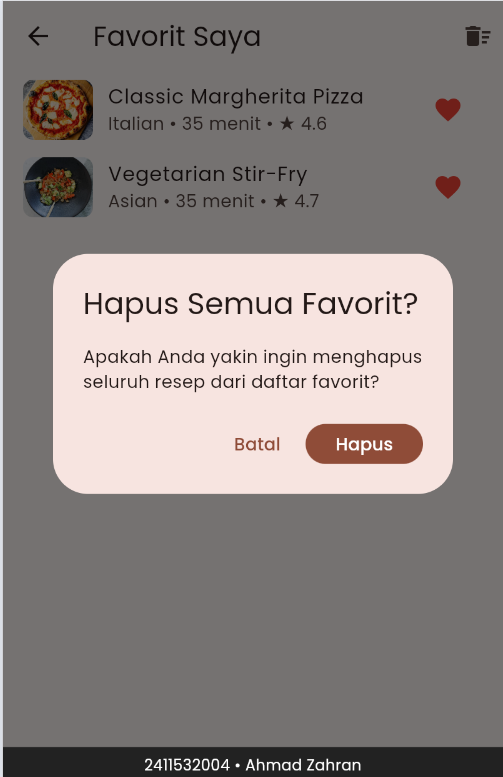

setState) vs Global State (Provider)Dalam pengembangan aplikasi mobile modern berbasis Flutter, pengelolaan status data atau state management merupakan aspek fundamental yang menentukan bagaimana antarmuka pengguna (user interface) merespons perubahan data secara dinamis. Secara arsitektural, state dalam Flutter terbagi menjadi dua kategori utama, yaitu ephemeral state (local state) yang cakupannya terbatas pada satu widget tunggal, serta app state (global state) yang perlu dibagikan, dibaca, dan dimodifikasi secara sinkron oleh berbagai widget maupun lintas halaman (screen).
Pendekatan bawaan Flutter melalui StatefulWidget dan fungsi setState() sangat efektif untuk menangani local state yang bersifat sementara, seperti pengaturan jumlah porsi dan kalkulasi kalori pada halaman detail resep. Namun, ketika suatu data—seperti daftar resep favorit atau pengaturan tema aplikasi—harus diakses secara bersamaan oleh banyak komponen pada posisi widget tree yang berbeda, penggunaan local state menjadi tidak efisien dan sulit disinkronkan. Keterbatasan ini mendorong perlunya solusi global state management yang terstruktur agar logika bisnis terpisah secara bersih dari lapisan tampilan.
Pada praktikum ini, dilakukan implementasi sekaligus perbandingan antara pengelolaan local state menggunakan setState() dan global state menggunakan package provider (ChangeNotifier dan MultiProvider) melalui studi kasus pengembangan aplikasi katalog resep “ResepKu”. Melalui rangkaian percobaan ini, mahasiswa diharapkan mampu memahami batasan local state dalam arsitektur navigasi Flutter serta mengimplementasikan mekanisme reaktif (context.watch, context.read, dan Consumer) untuk menjaga konsistensi data di seluruh bagian aplikasi.
Membuat state lokal menggunakan StatefulWidget dan setState() pada fitur jumlah porsi di halaman detail resep.
Menjelaskan keterbatasan state lokal ketika suatu data dibutuhkan secara bersamaan oleh banyak widget dan halaman.
Membuat state global (app state) menggunakan package provider (ChangeNotifier dan MultiProvider) pada fitur resep favorit.
Membaca dan mengelola state global menggunakan context.watch, context.read, dan Consumer di berbagai halaman aplikasi.
Buka terminal pada folder kerja, lalu jalankan perintah berikut untuk membuat project Flutter baru:
resepku di VS Code.lib/, buat 5 folder pendukung: models, data, providers, pages, dan widgets.test/widget_test.dart untuk menghindari kecacatan build akibat perubahan struktur dasar aplikasi.Buat file lib/models/recipe.dart untuk mendefinisikan skema data resep.
Penjelasan Kode: Property totalTimeMinutes diimplementasikan sebagai getter yang secara otomatis menjumlahkan prepTimeMinutes dan cookTimeMinutes tanpa perlu menyimpan state tambahan.
Buat file lib/data/dummy_recipes.dart sebagai sumber data statis awal resep.
1. lib/widgets/identity_footer.dart: Widget global untuk membungkus antarmuka aplikasi dengan footer identitas mahasiswa.
2. lib/main.dart (Versi Awal):
3. lib/pages/home_page.dart (Versi Awal):
4. lib/widgets/recipe_tile.dart (Versi Awal):
Buat file lib/pages/detail_page.dart menggunakan StatefulWidget untuk mengelola porsi.
Ganti file lib/widgets/recipe_tile.dart dengan versi eksperimen berikut untuk menyimpan status favorit sebagai state lokal:
Jalankan perintah berikut pada terminal untuk menambahkan dependensi provider:
Buat file lib/providers/favorite_provider.dart:
Ganti seluruh isi lib/main.dart untuk membungkus MaterialApp dengan MultiProvider:
Ubah kembali lib/widgets/recipe_tile.dart menjadi StatelessWidget yang menggunakan context.watch dan context.read:
Perbarui lib/pages/detail_page.dart untuk menambahkan tombol favorit di AppBar:
Buat file lib/pages/favorite_page.dart menggunakan widget Consumer:
1. Buat file lib/widgets/favorite_badge_button.dart:
2. Perbarui lib/pages/home_page.dart untuk menambahkan FavoriteBadgeButton di AppBar:
Tabel pengujian di bawah ini menyajikan evaluasi fungsionalitas fitur-fitur aplikasi ResepKu berdasarkan skenario pengujian modul:
| No | Skenario Pengujian | Hasil yang Diharapkan | Sesuai? |
|---|---|---|---|
| 1 | Tap ikon hati pada Margherita dan Alfredo di Home | Ikon berwarna merah, badge di AppBar menunjukkan angka 2 | Sesuai |
| 2 | Buka detail Margherita | Ikon hati di AppBar terisi (aktif/merah) | Sesuai |
| 3 | Di halaman detail, tap ikon hati, lalu kembali ke Home | Ikon Margherita kosong, badge di AppBar menunjukkan angka 1 | Sesuai |
| 4 | Tap badge favorit di AppBar | Halaman Favorit hanya berisi resep Alfredo | Sesuai |
| 5 | Hapus Alfredo dari halaman Favorit, lalu kembali | Halaman Favorit menampilkan pesan “Belum ada resep favorit”, badge hilang | Sesuai |
| 6 | Ubah porsi menjadi 2, kembali ke Home, lalu buka lagi resep yang sama | Porsi kembali ke nilai awal (misal: 4), karena state lokal dibuang saat halaman ditutup | Sesuai |
Berikut adalah hasil pengujian sesuai ketentuan checkpoint pada modul praktikum:

-) nonaktif saat porsi 1. Footer identitas (NIM dan Nama) terlihat di bagian bawah layar.setState() berhasil diperbarui dan logika perhitungan total kalori berfungsi dengan tepat.Analisis Penjelasan Kode Checkpoint 1 (Kondisi Tombol Minus):
Tombol minus (-) menjadi non-aktif (disabled) ketika nilai _servings == 1 disebabkan oleh logika ternary operator pada parameter onPressed widget IconButton.filledTonal: onPressed: _servings > 1 ? _removeServing : null. Pada Flutter, apabila nilai properti onPressed diset ke null, secara otomatis framework akan menonaktifkan interaksi tombol dan mengubah tampilannya menjadi disabled.

AppBar, sinkronisasi ikon hati merah pada halaman Detail resep favorit, serta daftar resep pada halaman Favorit Saya dengan footer identitas (NIM dan Nama) terekam utuh pada setiap tampilan.Provider disinkronkan secara real-time di seluruh halaman aplikasi.RecipeTile berubah warna/bentuk ketika ditekan. Hal ini terjadi karena perubahan variabel isFavorite dibungkus di dalam method setState(), sehingga Flutter melakukan re-render pada widget RecipeTile tersebut.isFavorite berada?isFavorite berada di dalam kelas RecipeTileState (state lokal). Karena HomePage berada di atas RecipeTile pada struktur widget tree, HomePage tidak dapat mengakses atau membaca variabel internal yang terisolasi di dalam anak widget-nya.isFavorite terkunci di RecipeTileState, ketika navigasi berpindah ke DetailPage, halaman detail akan membaca ulang instance Recipe murni tanpa informasi state favorit dari tile sebelumnya.setState() dan Tidak Di-Provider-kan?
Data jumlah porsi tergolong sebagai ephemeral state (state lokal) yang sifatnya sementara dan lingkup penggunaannya hanya berada pada halaman detail resep terkait. Berdasarkan pengujian Skenario 6 (Langkah C.7), ketika halaman detail ditutup, memori dan objek halaman tersebut dibuang (disposed), sehingga ketika resep dibuka kembali, porsi akan tersetel ulang ke nilai dasar. Menggunakan Provider untuk data sementara ini justru berlebihan (overengineering) dan membuang memori global state.
ChangeNotifierProvider ke HomePage (Membungkus Scaffold)
Apa yang terjadi saat halaman Favorit dibuka? Aplikasi akan crash dan melemparkan galat ProviderNotFoundException.
Penjelasan Penyebab: Dalam arsitektur navigasi Flutter (Navigator.push), halaman baru (FavoritePage) didorong di atas halaman lama sebagai rute (route) baru dalam widget tree, bukan sebagai anak (child) di dalam Scaffold HomePage. Jika ChangeNotifierProvider diletakkan di dalam HomePage, instansiasi FavoriteProvider hanya dapat diakses oleh anak-anak dalam pohon HomePage. Saat FavoritePage dibuka, ia tidak dapat menemukan FavoriteProvider di atas rutenya sendiri. Oleh sebab itu, Provider wajib dipasang di tingkat paling atas (main.dart di atas MaterialApp).
1. Buat file lib/providers/theme_provider.dart:
2. Perubahan pada lib/main.dart:
3. Buat file lib/pages/settings_page.dart:
4. Integrasi Tombol Pengaturan pada lib/pages/home_page.dart:

SwitchListTile “Mode Gelap”, serta perubahan tampilan aplikasi secara instan ke tema gelap (Brightness.dark) dengan footer identitas tetap terlihat.ThemeProvider berbasis ChangeNotifier berhasil mengubah themeMode secara menyeluruh pada level MaterialApp.Perbarui file lib/pages/favorite_page.dart untuk menambahkan tombol konfirmasi hapus pada AppBar:

AlertDialog “Hapus Semua Favorit” saat ikon sampah ditekan, serta kondisi tombol IconButton hapus yang berubah non-aktif (disabled) saat daftar favorit sudah bernilai kosong (0). Footer identitas terekam jelas.clear() dari FavoriteProvider bekerja dengan proteksi dialog konfirmasi pengguna.setState() sangat cocok digunakan untuk menangani ephemeral state (state lokal) yang cakupannya terbatas pada satu widget, seperti pengelolaan jumlah porsi dan kalkulasi kalori pada halaman detail.
provider dengan arsitektur ChangeNotifier memberikan solusi pengelolaan app state (state global) yang efisien, terstruktur, serta memisahkan logika bisnis dari antarmuka pengguna.
context.watch ideal dipakai di dalam method build() untuk me-rebuild tampilan saat state berubah, sedangkan context.read tepat dipakai pada callback event untuk mengeksekusi method aksi tanpa perlu mendengarkan perubahan data.